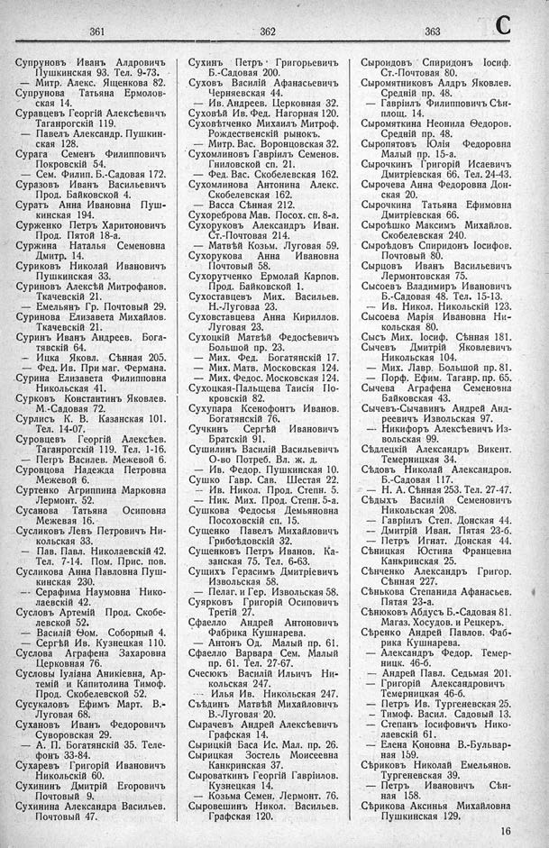

Лист источника 471
Скан

Распознанный текст
361
Супруновъ Иванъ Алдровичъ
Пушкинская 93. Тел. 9-73.
— Митр. Алекс. Ященкова 82.
Супрунова Татьяна Ермолов-
ская 14.
Суравцевъ Георгій Алексѣевичъ
Таганрогскій 119.
— Павелъ Александр. Пушкин-
ская 128.
Сурага Семенъ Филипповичъ
Покровскій 54.
— Сем. Филип. Б.-Садовая 172.
Суразовъ Иванъ Васильевичъ
Прод. Байковскій 4.
Суратъ Анна Ивановна Пуш-
кинская 194.
Сурженко Петръ Харитоновичъ
Прод. Пятой 18-а.
Суржина Наталья Семеновна
Дмитр. 14.
Суриковъ Николай Ивановичъ
Пушкинская 33.
Суриновъ Алексѣй Митрофанов.
Ткачевскій 21.
— Емельянъ Гр. Почтовый 29.
Суринова Елизавета Михайлов.
Ткачевскій 21.
Суринъ Иванъ Андреев. Бога-
тявскій 64.
— Ицка Яковл. Сѣнная 205.
— Фед. Ив. При маг. Фермана.
Сурина Елизавета Филипповна
Никольская 41.
Сурковъ Константинъ Яковлев.
М.-Садовая 72.
Сурлисъ К. В. Казанская 101.
Тел. 14-07.
Суровцевъ Георгій Алексѣев.
Таганрогскій 119. Тел. 1-16.
— Петръ Василев. Межевой 6.
Суровцова Надежда Петровна
Межевой 6.
Суртенко Агриппина Марковна
Лермонт. 52.
Сусанова Татьяна Осиповна
Межевая 16.
Сусликовъ Левъ Петровичъ Ни-
кольская 33.
— Пав. Павл. Николаевскій 42.
Тел. 7-14. Пом. Прис. Пов.
Сусликова Анна Павловна Пуш-
кинская 230.
-- Серафима Наумовна Нико-
лаевскій 42.
Сусловъ Артемій Прод. Скобе-
левской 52.
— Василій Ѳом. Соборный 4.
— Сергѣй Ив. Кузнецкая 110.
Суслова Аграфена Захаровна
Церковная 76.
Сусловы Іуліана Аникіевна, Ар-
темій и Капитолина Тимоф.
Прод. Скобелевской 52.
Сусукаловъ Ефимъ Март. В.-
Луговая 68.
Сухановъ Иванъ Федоровичъ
Суворовская 29.
— А. П. Богатянскій 35. Теле-
фонъ 33-84.
Сухаревъ Григорій Ивановичъ
Никольскій 60.
Сухининъ Дмитрій Егоровичъ
Почтовый 9.
Сухинина Александра Васильев.
Почтовый 47.
362
Сухинъ Петръ Григорьевичъ
Б.-Садовая 200.
Суховъ Василій Афанасьевичъ
Черняевская 44.
— Ив. Андреев. Церковная 32.
Суховѣй Ив. Фед. Нагорная 120.
Суховѣтченко Михаилъ Митроф.
Рождественскій рынокъ.
— Митр. Вас. Воронцовская 32.
Сухомлиновъ Гавріилъ Семенов.
Гниловской сп. 21.
— Фед. Вас. Скобелевская 162.
Сухомлинова Антонина Алекс.
Скобелевская 162.
— Васса Сѣнная 212.
Сухореброва Мав. Посох. сп. 8-а.
Сухоруковъ Александръ Иван.
Ст.-Почтовая 214.
— Матвѣй Козьм. Луговая 59.
Сухорукова Анна Ивановна
Почтовый 58.
Сухорутченко Ермолай Карпов.
Прод. Байковской 1.
Сухоставцевъ Мих. Васильев.
Н.-Луговая 23.
Суховставцева Анна Кириллов.
Луговая 23.
Сухоцкій Матвѣй Федосѣевичъ
Большой пр. 23.
— Мих. Фед. Богатянскій 17.
— Мих. Матв. Московская 124.
— Мих. Федос. Московская 124.
Сухоцкая-Пальщева Таисія По-
кровскій 82.
Сухупара Ксенофонтъ Иванов.
Богатянскій 76.
Сучкинъ Сергѣй Ивановичъ
Братскій 91.
Сушилинъ Василій Васильевичъ
О-во Потреб. Вл. ж. д.
— Ив. Федор. Пушкинская 10.
Сушко Гавр. Сав. Шестая 22.
— Ив. Никол. Прод. Степн. 5.
— Ник. Мих. Прод. Степн. 5-а.
Сушкова Федосья Демьяновна
Посоховскій сп. 15.
Сущенко Павелъ Михайловичъ
Грибоѣдовскій 32.
Сущенковъ Петръ Иванов. Ка-
занская 75. Тел. 6-63.
Сущихъ Герасимъ Дмитріевичъ
Извольская 58.
— Пелаг. и Гер. Извольская 58.
Суярковъ Григорій Осиповичъ
Третій 27.
Сфаелло Андрей Антоновичъ
Фабрика Кушнарева.
— Антонъ Од. Малый пр. 61.
Сфаелло Варвара Сем. Малый
пр. 61. Тел. 27-67.
Счесюкъ Василій Ильичъ Ни-
кольская 247.
--- Илья Ив. Никольская 247.
Съѣдинъ Матвѣй Михайловичъ
В.-Луговая 20.
Сырачевъ Андрей Алексѣевичъ
Графская 14.
Сырицкій Баса Ис. Мал. пр. 26.
Сырицкая Зостель Моисеевна
Канкринская 37.
Сыроваткинъ Георгій Гавріилов.
Кузнецкая 14.
— Козьма Семен. Лермонт. 76.
Сыровешинъ Никол. Васильев.
Графская 120.
363 C
Сыроидовъ Спиридонъ Іосиф.
Ст.-Почтовая 80.
Сыромятниковъ Алдръ Яковлев.
Средній пр. 48.
— Гавріилъ Филипповичъ Сѣн-
площ. 14.
Сыромяткина Неонила Ѳедоров.
Средній пр. 48.
Сыропятовъ Юлія Федоровна
Малый пр. 15-а.
Сырочкинъ Григорій Исаевичъ
Дмитріевская 66. Тел. 24-43.
Сырочева Анна Федоровна Дон-
ская 20.
Сырочкина Татьяна Ефимовна
Дмитріевская 66.
Сыроѣшко Максимъ Михайлов.
Скобелевская 240.
Сыроѣдовъ Спиридонъ Іосифов.
Почтовый 80.
Сырцовъ Иванъ Васильевичъ
Лермонтовская 75.
Сысоевъ Владимиръ Ивановичъ
Б.-Садовая 48. Тел. 15-13.
— Ив. Никол. Никольскій 123.
Сысоева Марія Ивановна Ни-
кольская 80.
Сысъ Мих. Іосиф. Сѣнная 181.
Сычевъ Дмитрій Яковлевичъ
Никольская 104.
— Мих. Лавр. Большой пр. 81.
— Порф. Ефим. Таганр. пр. 65.
Сычева Аграфена Семеновна
Байковская 43.
Сычевъ-Сычавинъ Андрей Анд-
реевичъ Извольская 97.
--- Никифоръ Алексѣевичъ Из-
вольская 99.
Сѣдлецкій Александръ Викент.
Темерницкая 34.
Сѣдовъ Николай Александров.
Б.-Садовая 117.
— Н. А. Сѣнная 253. Тел. 27-47.
Сѣдыхъ Василій Семеновичъ
Никольская 208.
— Гавріилъ Степ. Донская 44.
— Дмитрій Иван. Пятая 23-б.
— Петръ Игнат. Донская 44.
Сѣницкая Юстина Францевна
Канкринская 25.
Сѣнченко Александръ Григор.
Сѣнная 227.
Сѣнькова Степанида Афанасьев.
Пятая 23-а.
Сѣнюковъ Абдусъ Б.-Садовая 81.
Магаз. Хосудов. и Рецкеръ.
Сѣренко Андрей Павлов. Фаб-
рика Кушнарева.
— Александръ Федор. Темер-
ницк. 46-б.
— Андрей Павл. Седьмая 201.
— Григорій Александровичъ
Темерницкая 46-б.
— Петръ Ив. Тургеневская 25.
— Тимоф. Васил. Садовый 13.
— Степанъ Іосифовичъ Нико-
лаевскій 61.
— Елена Коновна В.-Бульвар-
ная 159.
Сѣриковъ Николай Емельянов.
Тургеневская 39.
— Петръ Ивановичъ Сѣн-
ная 158.
Сѣрикова Аксинья Михайловна
Пушкинская 129.
16